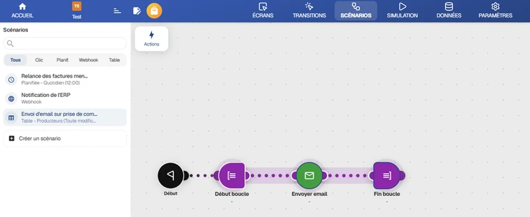
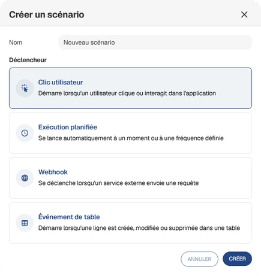
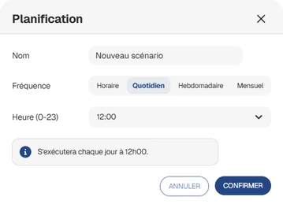
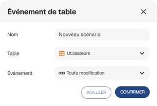
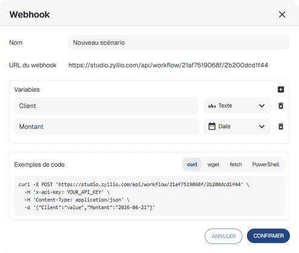
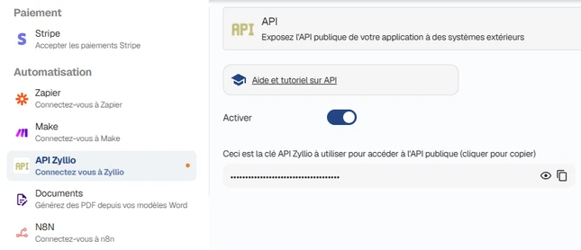
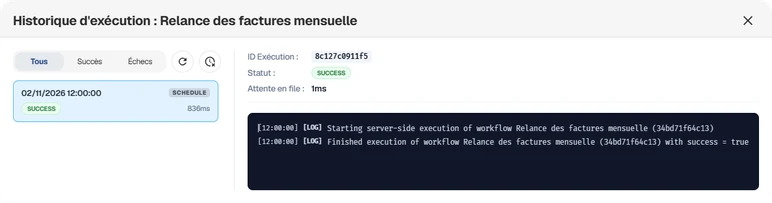

Scénarios
Les scénarios (workflows) permettent d'automatiser des traitements dans votre application : envoyer un email, mettre à jour des données, appeler un service externe, etc.
Chaque scénario est composé d'un déclencheur qui définit quand il démarre, et d'une suite d'étapes (actions) qui définissent ce qu'il fait.
L'espace Scénarios
Les scénarios se gèrent depuis l'onglet Scénarios de l'outil de conception.

La partie gauche liste les scénarios de l'application. Un champ de recherche et des filtres (Tous, Clic, Planif., Webhook, Table) permettent de retrouver rapidement un scénario. Sous le nom de chaque scénario est indiqué son déclencheur, par exemple Planifiée - Quotidien (12:00).
La partie droite affiche les étapes du scénario sélectionné. Le bouton Actions permet d'ajouter des étapes, qui sont ensuite reliées entre elles depuis le bloc Début.
Au survol d'un scénario, des boutons permettent selon son type de le renommer ou de le modifier, de le lancer manuellement, de consulter son historique d'exécution, d'afficher ses usages ou de le supprimer.
La liste des actions disponibles est détaillée dans la page Actions.
Créer un scénario
Cliquez sur Créer un scénario en bas de la liste, puis saisissez un nom et choisissez un déclencheur.

| Déclencheur | Description |
|---|---|
| Clic utilisateur | Démarre lorsqu'un utilisateur clique ou interagit dans l'application |
| Exécution planifiée | Se lance automatiquement à un moment ou à une fréquence définie |
| Webhook | Se déclenche lorsqu'un service externe envoie une requête |
| Événement de table | Démarre lorsqu'une ligne est créée, modifiée ou supprimée dans une table |
Selon le déclencheur choisi, une fenêtre de configuration s'ouvre pour renseigner le nom du scénario et ses paramètres.
Clic utilisateur
Un scénario de type Clic est un scénario partagé : il peut être réutilisé depuis plusieurs écrans ou depuis d'autres scénarios, au lieu de dupliquer les mêmes actions.
Le bouton Usages affiche la liste des écrans et des scénarios qui l'utilisent.
Un scénario partagé encore utilisé ne peut pas être supprimé. Retirez d'abord ses usages.
Exécution planifiée
Un scénario planifié s'exécute automatiquement selon une fréquence.

| Fréquence | Paramètres | Exemple |
|---|---|---|
| Horaire | - | S'exécutera toutes les heures. |
| Quotidien | Heure (0-23) | S'exécutera chaque jour à 12h00. |
| Hebdomadaire | Jour de la semaine, Heure | S'exécutera chaque lundi à 8h00. |
| Mensuel | Jour du mois (1-31), Heure | S'exécutera chaque mois le 1 à 6h00. |
Les scénarios planifiés sont exécutés en début d'heure. Le bouton Lancer manuellement permet de tester un scénario planifié sans attendre son prochain déclenchement.
Pour une fréquence mensuelle, un jour qui n'existe pas dans le mois (par exemple le 31) n'est pas exécuté ce mois-là.
Événement de table
Un scénario de type Table démarre automatiquement lorsqu'une donnée change dans une table de l'application.

Choisissez la Table à surveiller, puis l'Événement :
- Toute modification
- Ligne créée
- Ligne modifiée
- Ligne supprimée
Webhook
Un scénario de type Webhook est déclenché par un système extérieur (ERP, CRM, script, autre application...) qui envoie une requête HTTP POST à Zyllio.

URL du webhook
L'URL est générée automatiquement et affichée dans la fenêtre de configuration du webhook. Elle a la forme suivante :
https://<hôte-de-votre-application>/api/workflow/<id-application>/<id-scénario>Clé d'API
Chaque requête doit contenir le header x-api-key avec la clé d'API de l'application.
Cette clé se trouve dans l'onglet Paramètres, rubrique Intégrations, carte API. Cliquez sur la clé pour la copier.

La clé d'API donne accès à votre application. Ne la partagez pas et ne l'intégrez pas dans du code exécuté côté navigateur.
Variables
Les variables définissent les données attendues dans le corps JSON de la requête. Chaque variable a un nom unique et un type.
| Type | Valeur JSON attendue | Exemple |
|---|---|---|
| Texte | Chaîne de caractères | "Dupont" |
| Nombre | Nombre | 42.5 |
| Booléen | true ou false | true |
| Date | Chaîne au format ISO 8601 | "2026-11-02" ou "2026-11-02T14:30:00Z" |
Toutes les variables déclarées sont obligatoires. Les valeurs reçues sont ensuite utilisables dans les étapes du scénario.
Exemple d'appel
La fenêtre de configuration propose des exemples de code prêts à copier (curl, wget, fetch, PowerShell). Exemple avec curl :
curl -X POST "https://<hôte>/api/workflow/<id-application>/<id-scénario>" \
-H "Content-Type: application/json" \
-H "x-api-key: <votre-clé-api>" \
-d '{"client":"Dupont","montant":42.5}'Réponses
| Code HTTP | Signification |
|---|---|
200 {"status":"queued"} | La requête est acceptée, le scénario est mis en file d'exécution |
200 {"status":"skipped"} | Le scénario ne contient aucune étape, rien n'est exécuté |
| 400 | Variable manquante ou de mauvais type (le détail est indiqué dans errors), ou scénario qui n'est pas de type Webhook |
| 401 | Header x-api-key absent ou invalide |
| 403 | Application introuvable |
| 404 | Scénario introuvable |
L'exécution est asynchrone : la réponse est renvoyée immédiatement, sans attendre la fin du scénario. Le résultat de l'exécution est consultable dans l'historique d'exécution.
Historique d'exécution
Les scénarios Planifiés, Webhook et Table disposent d'un historique d'exécution, accessible depuis le bouton Historique d'exécution de la liste.

La liste des exécutions peut être filtrée (Tous, Succès, Échecs). En sélectionnant une exécution, vous accédez à son détail :
- l'identifiant et le statut de l'exécution
- le temps d'attente en file
- les variables de déclenchement (payload)
- les logs console de l'exécution
Le bouton Supprimer tout l'historique efface l'historique du scénario. Cette action est irréversible.